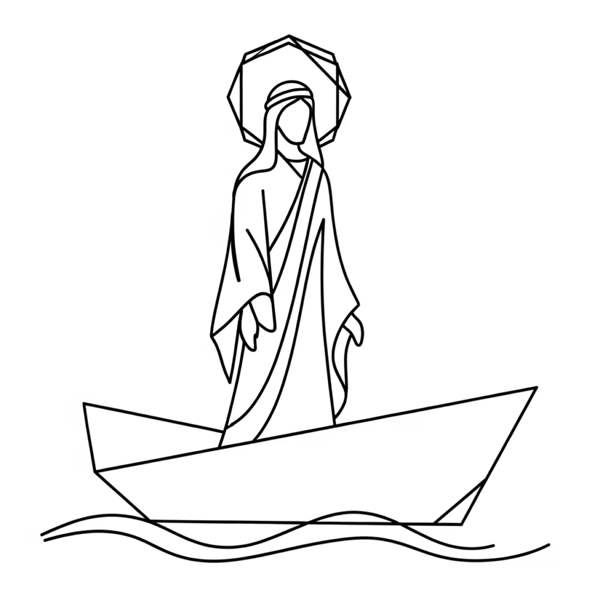

Throughout Scripture, the twelve sons of Jacob are not figures of ancestry in a physical sense—they represent twelve developed states of mind forming in the inner man. Just as the twelve disciples later mirror psychological qualities awakened through experiential development, these sons of Jacob appear in the early narrative as brothers of the soul—each one a distinct aspect of consciousness coming into maturity. They are not outside of you. They are you, forming inwardly, each with a purpose in the unfolding of imagination.
In the Bible, Zebulun is not just one of Jacob's sons—he symbolises a spiritual state. His name, tied to dwelling and honour, reveals the inner moment when YHVH/LORD—present consciousness—begins to value the foundational mind and live in conscious relationship with it. This is the foundation of all creation encoded in the Linguistic Engine: the identity assumed as I AM (Ehyeh) is what Elohim, the Judges and Rulers of consciousness, must enforce into form.
To dwell with honour is to present the full assumption before Elohim — as Abel brought the firstlings, the complete filing, and YHVH/LORD had regard for it. This is not mystical—it is Law. It is the courtroom of consciousness enforcing exactly what is placed before it.
Zebulun and the Soul's Readiness
In Genesis 30:20, Leah says:
"God has given me a good heritage; now will my husband be living with me, because I have given birth to six sons for him: and she gave him the name Zebulun." — Genesis 30:20
The name Zebulun encodes dwelling, honour, and gift. But this is not about a physical household. It is a picture of YHVH/LORD—present consciousness—arriving at the threshold where union with the assumed identity becomes possible. After bearing six sons—six being the number of connection, joining and completion (vav in Hebrew)—the inner landscape is prepared.
This is the courtroom of consciousness made ready. The "bride" is the subconscious—the deep, receptive self. The "bridegroom" is the I AM—the identity assumed as already true. When YHVH/LORD cleaves to Ehyeh/I AM in feeling, Elohim is bound to enforce the union as lived experience. Thread 3 of the Key makes this precise: leave the familiar state, cleave to the assumed identity, and Elohim enforces "One Flesh"—the continuity of what has been inwardly accepted.
Zebulun symbolises that threshold—where the inner life is no longer overlooked, but honoured as the primary creative unit.
Dwelling with Honour: Genesis 4:7
This principle of honour and dominion is echoed in Genesis, where God tells Cain:
"If you do well, will you not have honour? and if you do wrong, sin is waiting at the door, desiring to have you, but you are to be its master."— Genesis 4:7
To "do well" within the framework of the Linguistic Engine is to remain loyal to the assumed identity—to present a coherent Ehyeh/I AM before Elohim without contradiction. Honour is the result when YHVH/LORD occupies the desired state consistently: life reflects back what has been accepted within, because Elohim enforces identity after its kind.
But if YHVH/LORD does not do well—if it reacts to appearances, falls back into a fragmented or contradictory identity, presenting "Lack" before the bench—then sin lies at the door. Sin, in its root meaning, is to "miss the mark"—a jurisdictional error in the Linguistic Engine. Thread 7 of the Key calls this a "False Filing": YHVH/LORD claims the Palace while presenting the Pit. Elohim, impartial and precise, enforces the identity actually assumed, not the one merely desired.
Yet the command remains: "You are to be its master." This is the entire weight of the Scripture at this point. YHVH/LORD is not here to be governed by appearances—it is here to master assumption, to govern the conscious field, to dwell with honour. Repentance, in this framework, is simply amending the filing—returning the assumed I AM to the intended blueprint.
Zebulun and the Sea: Living Close to the Depths Of The Mind
Jacob's blessing in Genesis 49:13 gives the state its geographic signature:
"Zebulun will be living by the sea-shore; he will be a harbour for ships, and his border will be turned toward Zidon." — Genesis 49:13
This is not about geography—it is about inner reality rendered as landscape. The sea and water are symbols of the subconscious mind—deep, formless, always accepting, always bringing forth what is planted within it. In the language of the Key, the sea is the space where Elohim operates below the surface of awareness: neutral, lawful, enforcing after kind.
To "dwell at the haven of the sea" is to live in full awareness of this truth. YHVH/LORD, having assumed Ehyeh/I AM, takes up permanent residence near the subconscious—not in fear of it, but in reverence. The one who knows the sea plants into it only what they want to receive back. Zebulun does not scatter ships carelessly. He maintains a haven—a governed, intentional inner harbour from which assumed identities are launched and to which manifested experience returns.
The ships are assumptions sent out in feeling. Elohim—faithful and impartial—receives them and returns them as experience. Thread 1 of the Key establishes this in botanical terms: YHVH/LORD assumes the identity (the seed, the I AM), and Elohim enforces the laws of reproduction after kind. What goes into the sea as an assumed identity comes back as circumstance. The sea does not judge the ship. It carries it.
Zidon and the Exchange: Perception Sent Out, Reality Received Back
The border of Zebulun is turned toward Zidon. Under Thread 8 of the Key, place names are not incidental—they are compressed identity codes that disclose the nature of the state interacting within consciousness. Zidon's name means fishing or hunting: the active drawing forth of what the deep contains. In the Bible narrative, Zidon was the great Phoenician trading port—a city built entirely on the principle of exchange. Ships departed carrying one thing and returned bearing another. Nothing was hoarded at the haven. Everything moved.
This is the mechanics of the Linguistic Engine rendered as geography. YHVH/LORD—present consciousness—sends out a ship: an assumed Ehyeh/I AM, a perception of the desired state accepted as true within. The subconscious, the sea, receives it. Elohim, operating as the enforcer of identity after its kind, processes what was planted and returns it as outer experience—a transformed cargo, reality in the form of the assumption that was sent. The border toward Zidon declares that the state of Zebulun is oriented toward this exchange. It does not simply dwell passively. It trades. It casts. It expects a return.
Proverbs draws on the same image:
"She is like the trading-ships, getting food from far away." — Proverbs 31:14
The capable woman—the one who fully occupies her state—draws from distant sources, from the deep, from what the sea contains. She does not wait for what is near and visible. She sends out and receives back. This is the posture of Zebulun: YHVH/LORD oriented toward the subconscious as a trading port, knowing that what is assumed within will be returned without, and preparing the haven accordingly.
Psalm 107 names the dynamic plainly:
"Those who go down to the sea in ships, doing business in great waters; These see the works of the Lord, and his wonders in the deep." — Psalm 107:23–24
The works of YHVH/LORD are seen in the deep—in the subconscious—by those who go down into it with purpose, who do business there, who understand that the great waters are not a threat but the very medium through which Elohim enforces the assumed I AM. Zebulun lives at this haven because he has understood what the merchants know: the exchange is always exact. What you send into the deep is what comes back to the shore.
Moses and the Blessing of Zebulun: Deuteronomy 33:18–19
Moses, at the close of his life, blesses the tribes. His words over Zebulun reveal the fullness of the state:
"And of Zebulun he said, Be glad, Zebulun, when you go out; and, Issachar, in your tents. They will have the peoples to the mountain; there they will make the right offerings; for they will have wealth from the seas, and the secret things of the sand." — Deuteronomy 33:18–19
Zebulun goes out—YHVH/LORD moves from the inner state into expression, into manifested form. The rejoicing at going out is the natural result of a state fully assumed: when Ehyeh/I AM has been inwardly established, Elohim enforces it outwardly and the movement from inner to outer becomes cause for celebration rather than anxiety. This is the moment of Thread 6: the Garden of current consciousness yielding to the Kingdom of fully realised identity.
The "secret things of the sand" speaks to the hidden wealth encoded in the subconscious—the treasures that lie at the boundary between sea and land, between the deep formless and the manifested surface. These are not discovered by force. They are uncovered by dwelling, by sustained proximity to the subconscious, by the patient orientation of YHVH/LORD toward the exchange. Elohim enforces the accumulated identity. The wealth from the seas flows not by striving, but by sustained inner alignment—the merchant who knows which port to sail toward and what cargo to carry.
Jesus in the Land of Zebulun: Matthew 4:12–17
Matthew connects the beginning of Jesus's ministry directly to the land of Zebulun, quoting Isaiah:
"The land of Zebulun and the land of Naphtali, by the way of the sea, across Jordan, Galilee of the Gentiles; The people which were seated in the dark saw a great light; and to those who were in the land of the shadow of death, light came up." — Matthew 4:15–16
YHVH/LORD—consciousness—arrives in the territory of Zebulun: the place of dwelling near the sea, the subconscious frontier. What had been in darkness—unformed, unassumed identity—receives light. The light is the assumed I AM made conscious. This is Thread 6 in operation: the Garden of current consciousness yielding to the Kingdom of fully realised identity. The ministry begins here, at the haven, because this is where the exchange between the inner and outer worlds takes place.
Every story connected with the Sea of Galilee reveals YHVH/LORD's authority over the subconscious forces that shape outer experience:
Calming the storm (Mark 4:39):
"And he got up and gave orders to the wind, and said to the sea, Peace, be at rest. And the wind went down, and there was a great calm." — Mark 4:39
YHVH/LORD commands the inner weather. The storm is the turbulence of the subconscious under the pressure of unresolved, contradictory assumptions—the sea reflecting back what has been filed before it. Peace is the unified Ehyeh/I AM imposed over that turbulence. Elohim enforces the still state. The sea obeys because the sea always obeys the dominant assumed identity.
Walking on water (Matthew 14:25, 27):
"And in the fourth watch of the night he came to them, walking on the sea… But Jesus said to them at once, Take heart; it is I; have no fear."— Matthew 14:25, 27
Rising above the subconscious rather than being governed by it. YHVH/LORD does not sink into the sea of appearances because the assumed I AM is not subject to them. "It is I"—Ehyeh/I AM declared with absolute steadiness. Elohim enforces what is assumed, not what is seen. This is the merchant who does not lose nerve when the waters are rough—who holds the course because the filing is already made.
Teaching from a boat (Luke 5:3):
"And he got into one of the boats, which was Simon's, and made a request to him to go a little way from the land. And he took his seat in the boat and gave teaching to the people." — Luke 5:3
Sharing truth while resting within the subconscious—using it as a platform, not fighting it. This is the posture of Zebulun: dwelling near the sea, working from within it, governing it from a place of assumed authority. The boat is the assumed identity from which YHVH/LORD operates.
Calling fishermen (Matthew 4:18–19):
"And Jesus, going by the sea of Galilee, saw two brothers, Simon who is named Peter, and Andrew his brother, putting a net into the sea; for they were fishermen. And he said to them, Come after me, and I will make you fishers of men." — Matthew 4:18–19
Thread 4 in full operation: the Shepherd gathers the scattered voices of consciousness into one unified purpose. The fishermen—previously casting into the sea without direction—are now gathered under one assumed Ehyeh/I AM. Elohim enforces the new fold. The fishing now becomes intentional: Zebulun's border toward Zidon, the state oriented toward deliberate exchange with the deep.
The Net Cast and the Catch: John 21:6
After the resurrection, the disciples return to the sea—to the subconscious—and find nothing. They have been casting from the wrong side, presenting the wrong I AM before the deep:
"And he said to them, Put out the net on the right side of the boat and you will get some. So they put it out, and were not able to pull in the net because of the great number of fish." — John 21:6
The right side is the right assumption. YHVH/LORD, operating from the correct Ehyeh/I AM, presents that identity to the subconscious—and Elohim, enforcing the statutes of creation, fills the net. The fish were always there. The sea was always ready. The exchange was always possible. The issue was the orientation of the assumed identity—the side from which the net was cast, the quality of what YHVH/LORD presented before the deep.
This is the entire operation of Zebulun compressed into one scene. The haven is not passive. The merchant does not simply wait at the port. YHVH/LORD orients toward the subconscious with a specific, sustained assumed identity—and Elohim returns the exact cargo of that assumption as lived experience. Cast from the right side, and the deep will return abundance. This is the exchange. This is the trade. This is what it means to dwell near the sea with honour.
Symbolic Summary
Zebulun (Name) – Compressed identity code: dwelling, honour, gift. Elohim enforces the nature embedded in the name as lived experience (Thread 8).
Dwelling – YHVH/LORD maintaining sustained occupation of the assumed Ehyeh/I AM without abandoning it for appearances.
Honour – The outcome Elohim enforces when YHVH/LORD presents a coherent identity before the bench.
Genesis 4:7 – The reminder that sin is a jurisdictional error—a false filing—and that YHVH/LORD is commanded to be its master.
The Sea – The subconscious: neutral, powerful, the domain where Elohim operates to enforce assumed identity after its kind.
Zidon (Name) – Fishing, hunting, trading port: the nature of the exchange. The border toward Zidon reveals that the state of Zebulun is oriented toward deliberate commerce with the subconscious (Thread 8).
Ships / Net – Assumed identities sent into the subconscious; the cargo of the exchange that Elohim returns as manifested experience.
The Right Side – The correct orientation of assumption; YHVH/LORD presenting the intended Ehyeh/I AM to the subconscious.
Secret things of the sand – The hidden wealth Elohim releases when YHVH/LORD dwells in sustained inner alignment at the boundary of sea and land.
Calmness – The stillness of a unified Ehyeh/I AM held over the turbulence of the subconscious; Elohim enforcing the settled state.
Jesus on Water – YHVH/LORD assuming Ehyeh/I AM so completely that the subconscious no longer governs it—only upholds it.
Zebulun as the Turning Point
Zebulun marks the moment in you when YHVH/LORD stops scattering assumptions and begins to dwell in a chosen Ehyeh/I AM with honour. He is not a man of the past—he is a state entered when the mechanics of the Linguistic Engine are finally understood: the sea will return what you send into it, because Elohim enforces identity after its kind. The exchange is always exact.
The subconscious is not a mystery. It is law. It will not argue. It will not interpret. Elohim—the Judges and Rulers of the assumed I AM—will bring forth what YHVH/LORD accepts as true, impartially and precisely. The border toward Zidon tells you the orientation of this state: it faces the trading port, the place of deliberate exchange, the haven from which ships depart carrying assumption and to which they return carrying reality.
The name Zebulun already contains the verdict. Gift. Dwelling. Honour. The state carries its own enforced outcome. Once YHVH/LORD fully occupies it—once the filing is complete, the net cast from the right side, the ship launched from the right port—Elohim is bound to uphold it.
Zebulun lives near the sea because he understands it. He sends ships because he knows what the exchange demands. He dwells with honour because he knows that everything in life reflects the identity assumed within—and Elohim, faithful to the statutes of creation, will always return what was sent into the deep.
In the end, you are not at the mercy of the sea.
You are the merchant at the haven. You are the one who loads the ship and reads the return.
And the sea, in silence, always delivers exactly what was given to it.
About The Author | Jacob Series | Jacob's Twelve Son's and Tribes Series | Numbers: Six | Numbers: Twelve | Water Symbolism